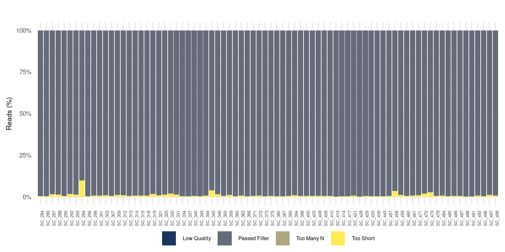
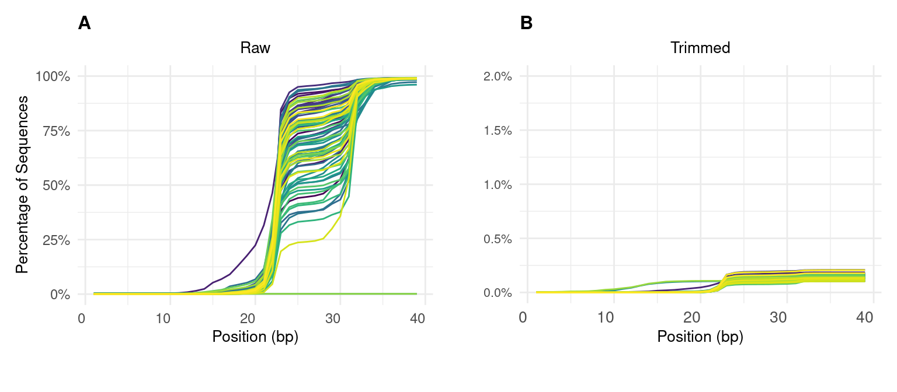
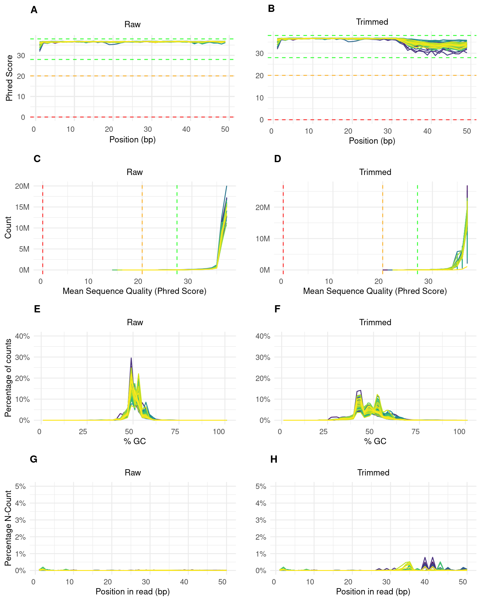
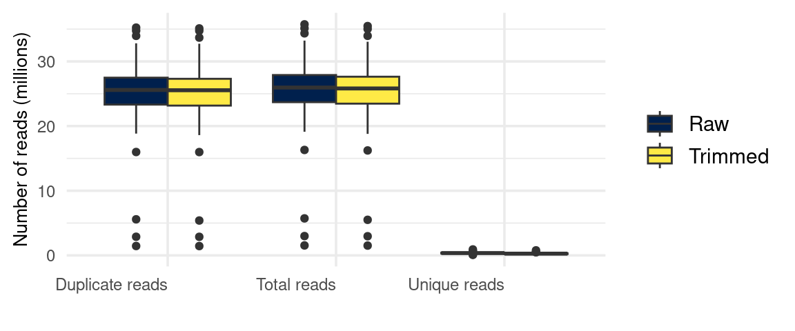
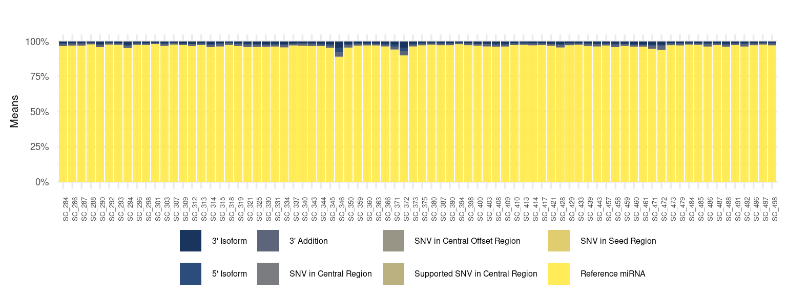
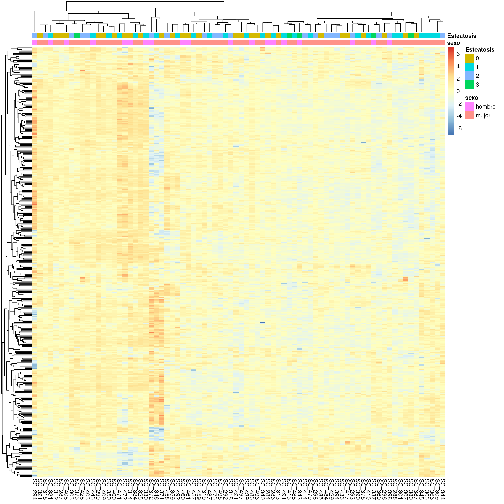
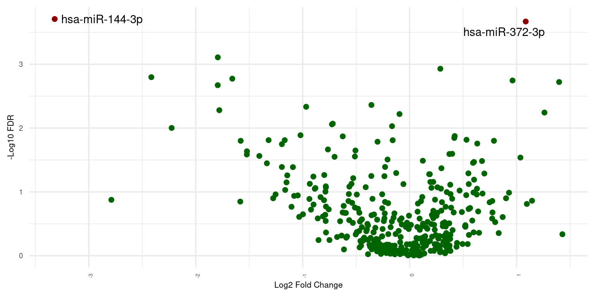
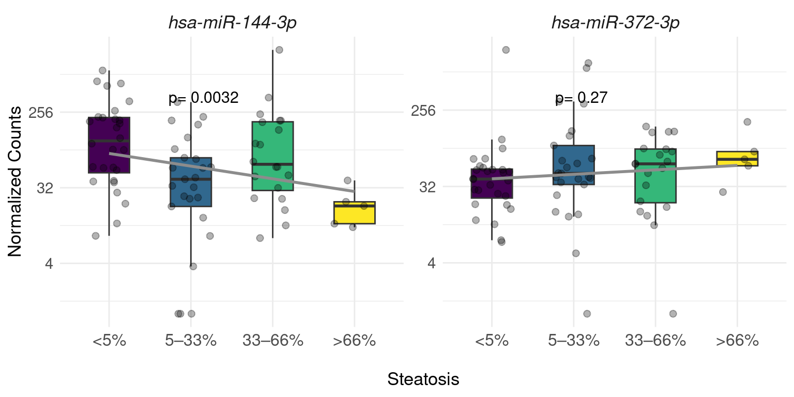

Table 1 describes the phenotypical features of FATe patients selected for this study. This cohort encomprisses 78 subjects (24% males; 76% females), aged between 22 to 61 with obesity as regards of BMI levels of 46.11 ± 6.13 kg/m². These patients had an overall presence of general variables/descriptors of metabolic syndrome features of particular interest those related to liver/hepatic status (steatosis, lobular inflammation and the prevalence of associated metabolic diseases). According to the hepatic fat scale, 35.9% of patients had less than 5% liver fat, indicating a normal or minimal steatosis state. A total of 32.1% exhibited mild steatosis (5–33%), while 25.6% showed moderate fat accumulation (33–66%). Only 6.4% of patients presented severe steatosis (>66%), with no significant differences between men and women (p=0.818).
Table 1: Clinical characteristics of the FATe cohort and their statistical differences. Data are presented as number (%) or median [interquartile range]. Differences between groups were tested with the Mann–Whitney U test and chi-square test; BMI: Body Mass Index (kg/m²); NASH: Non-alcoholic steatohepatitis.
Regarding lobular inflammation, most patients (66.7%) had no inflammatory foci, while 24.4% exhibited fewer than two foci per microscopic field, and 3.8% showed severe inflammation (>4 foci). Hepatocyte ballooning analysis revealed that 74.4% of patients did not display significant damage, although 9.0% showed severe ballooning.
Among most prevalent comorbidities, 26.9% of patients were diagnosed with diabetes, and 34.6% presented hyperlipidemia, with the latter being significantly more prevalent in men (63.2%) compared to women (25.4%, p=0.006). Additionally, 15.4% of patients were classified with non-alcoholic steatohepatitis (NASH), although this proportion showed no statistically significant differences between genders (p=0.249). Collectively, these data highlight the heterogeneity in the clinical characteristics of the cohort, emphasizing the complexity of the relationship between obesity and liver disease in this group of patients.
Quality Control (QC) and reads preprocessing
All QC results from the various steps in the nf-core/smrnaseq pipeline are summarized in the following figures and tables. The evaluation of samples, both before and after processing, was conducted using fastp, a rapid tool designed for preprocessing RNA sequencing data. This tool includes features for adapter trimming, quality filtering, and report generation, making it essential for assessing sample quality. Overall, Table 2 presents a descriptive analysis that includes key metrics related to the sequencing data.
library(readr)library(dplyr)
Adjuntando el paquete: 'dplyr'
The following object is masked from 'package:kableExtra':
group_rows
The following objects are masked from 'package:stats':
filter, lag
The following objects are masked from 'package:base':
intersect, setdiff, setequal, union
── Conflicts ────────────────────────────────────────── tidyverse_conflicts() ──
✖ ggplot2::%+%() masks psych::%+%()
✖ scales::alpha() masks ggplot2::alpha(), psych::alpha()
✖ scales::col_factor() masks readr::col_factor()
✖ gridExtra::combine() masks dplyr::combine()
✖ purrr::discard() masks scales::discard()
✖ dplyr::filter() masks stats::filter()
✖ dplyr::group_rows() masks kableExtra::group_rows()
✖ dplyr::lag() masks stats::lag()
ℹ Use the conflicted package (<http://conflicted.r-lib.org/>) to force all conflicts to become errors
file_path_data <-"data/general_stats_table.tsv"# Cambia esto por la ruta realgeneral_stats_data <-read.delim(file_path_data, header =TRUE, sep ="\t")general_stats_data <-read_delim(file_path_data, delim ="\t", col_names =TRUE, na =c(".", "NA"), guess_max =10000)
New names:
• `Seqs` -> `Seqs...16`
• `Seqs` -> `Seqs...21`
Warning: One or more parsing issues, call `problems()` on your data frame for details,
e.g.:
dat <- vroom(...)
problems(dat)
Rows: 390 Columns: 21
── Column specification ────────────────────────────────────────────────────────
Delimiter: "\t"
chr (2): Sample, Seqs...21
dbl (19): % Duplication, Reads After Filtering, GC content, % PF, % Adapter,...
ℹ Use `spec()` to retrieve the full column specification for this data.
ℹ Specify the column types or set `show_col_types = FALSE` to quiet this message.
Table 2: Descriptive statistics of the analyzed metrics with fastp. % Duplication: Duplication rate before filtering; Reads After Filtering: Total reads after filtering in millions; % GC content: GC content after filtering; % PF: Percent reads passing filter; % Adapter: Percentage adapter-trimmed reads
Mean
sd
Median
Minimum
Maximum
Range
% Duplication
98.30513
0.68
98.45
94.31
99.09
4.78
Reads After Filtering (M)
25.23152
5.67
25.82
1.51
35.47
33.96
% GC content
46.71982
1.68
46.43
43.26
50.89
7.63
% PF
99.02358
1.21
99.36
90.13
99.76
9.63
% Adapter
99.38240
0.35
99.45
96.96
99.62
2.66
The metrics obtained from the fastp analysis provide a detailed overview of the preprocessing performance across the samples. The percentage of duplicated reads before filtering was notably high, with a mean of 98.31% (±0.68), a median of 98.45%, and a range between 94.31% and 99.09%. After filtering, the number of reads retained per sample averaged 25.23 million (±5.67M) suggesting a reasonable amount of reads obtained, with a median of 25.82M and a range from 1.51M to 35.47M.
The GC content showed consistency across the samples, with an average of 46.72% (±1.68), a median of 46.43%, and a range between 43.26% and 50.89%. The percentage of pass-filtered (PF%) reads was high, with an average of 99.02% (±1.21), reaching a maximum of 99.76%, as shown in Figure 1.
# Cargar datosfilter_fastp <-read.table("data/fastp_filtered_reads_plot.tsv", header =TRUE, sep ="\t")# Transformación de los datosdata_fastp <- filter_fastp %>%pivot_longer(cols =-Sample, names_to ="Category", values_to ="Reads") %>%group_by(Sample) %>%mutate(Proportion = Reads /sum(Reads)) %>%# Calcular proporciones por muestraungroup()# Gráfico de barras apiladas al 100%ggplot(data_fastp, aes(x = Sample, y = Proportion, fill = Category)) +geom_bar(stat ="identity", position ="stack", alpha =0.9) +labs(title ="",x ="",y ="Reads (%)" ) +scale_y_continuous(labels = scales::percent) +scale_fill_viridis_d(option ="cividis", labels =c("Passed.Filter"="Passed Filter","Low.Quality"="Low Quality","Too.Many.N"="Too Many N","Too.Short"="Too Short" ))+theme_minimal(base_size =14) +theme(axis.text.x =element_text(angle =90, hjust =1, size =5),axis.text.y =element_text(angle =0, hjust =1, size =7),axis.title =element_text(size =8),plot.title =element_text(size =12, face ="bold"),legend.title =element_blank(),legend.text =element_text(size =6),legend.position ="bottom",legend.margin =margin(t =-20), # Ajusta el margen superior de la leyenda )

Figure 1: Fastp: Filtered Reads
The adapters used in library construction, specifically the Illumina Universal Adapter type, are optimized for the amplification and sequencing of diverse sample types. The adapter trimming was highly effective, achieving a mean success rate of 99.38% (±0.35) indicating a low level of adapter contamination in most samples, with a range from 96.96% to 99.62% (Table 2). In line with these findings, Figure 2 illustrates the adapter content before and after processing with fastp, where the mean trimming percentage of 0.05 ± 0.06% for scWAT samples indicates that adapters were effectively removed from all samples. These results confirm the efficiency of the preprocessing steps, ensuring that high-quality reads were retained while effectively eliminating low-quality sequences and adapters.
## FastQC Adapter Trimmed ### Cargar los datos desde un archivo .tsvfile_path_trimed <-"data/fastqc-1_adapter_content.tsv"# Cambia esto por la ruta realdata_adapter_trimmed <-read.delim(file_path_trimed, header =TRUE, sep ="\t")# Renombrar las columnascolnames(data_adapter_trimmed) <-c("Sample", as.character(1:39)) # Asumiendo que tus columnas son del 1 al 39# Transformar los datos de formato ancho a formato largodata_long_adapter_trimmed <-pivot_longer(data_adapter_trimmed, cols =-Sample, names_to ="bp", values_to ="Contenido")# Convertir el contenido a porcentajesdata_long_adapter_trimmed$Contenido <- data_long_adapter_trimmed$Contenido # Convertir a porcentaje# Filtrar solo las posiciones de 1 a 30data_long_adapter_trimmed <-data_long_adapter_trimmed[data_long_adapter_trimmed$bp %in%as.character(1:39), ]#mean(data_long_adapter_trimmed$Contenido)#sd(data_long_adapter_trimmed$Contenido)#summary(data_long_adapter_trimmed$Contenido)################################################################################### FastQC Adapter Raw #### Cargar los datos desde un archivo .tsvfile_path_raw <-"data/fastqc_adapter_content.tsv"# Cambia esto por la ruta realdata_adapter_raw <-read.delim(file_path_raw, header =TRUE, sep ="\t")# Renombrar las columnascolnames(data_adapter_raw) <-c("Sample", as.character(1:39)) # Asumiendo que tus columnas son del 1 al 39# Transformar los datos de formato ancho a formato largodata_long_adapter_raw <-pivot_longer(data_adapter_raw, cols =-Sample, names_to ="bp", values_to ="Contenido")# Convertir el contenido a porcentajesdata_long_adapter_raw$Contenido <- data_long_adapter_raw$Contenido # Convertir a porcentaje# Filtrar solo las posiciones de 1 a 30data_long_adapter_raw <-data_long_adapter_raw[data_long_adapter_raw$bp %in%as.character(1:39), ]
### FastQC: Adapter Content (raw)p9 <-ggplot(data_long_adapter_raw, aes(x =as.numeric(bp), y = Contenido, color = Sample, group = Sample)) +geom_line() +labs(title ="A",subtitle ="Raw",x ="Position (bp)",y ="Percentage of Sequences") +theme_minimal() +scale_color_viridis_d(option ="viridis") +scale_y_continuous(limits =c(0, 100), labels = scales::percent_format(scale =1)) +# Establecer límites del eje Y hasta 5%theme(axis.text.x =element_text(angle =0, hjust =1, size =9),axis.text.y =element_text(angle =0, hjust =1, size =9),axis.title =element_text(size =10),plot.subtitle =element_text(size =10, hjust =0.5 ),plot.title =element_text(size =12, face ="bold"),plot.margin =margin(t =10, r =10, b =30, l =10),legend.position ="none" ) # Eliminar leyenda # Eliminar leyenda # Eliminar leyenda### FastQC: Adapter Content (trimmed)p10 <-ggplot(data_long_adapter_trimmed, aes(x =as.numeric(bp), y = Contenido, color = Sample, group = Sample)) +geom_line() +labs(title ="B",subtitle ="Trimmed",x ="Position (bp)",y ="") +theme_minimal() +scale_color_viridis_d(option ="") +# Aplicar la paleta Cividisscale_y_continuous(limits =c(0, 2), labels = scales::percent_format(scale =1)) +# Establecer límites del eje Y hasta 5%theme(axis.text.x =element_text(angle =0, hjust =1, size =10),axis.text.y =element_text(angle =0, hjust =1, size =8),axis.title =element_text(size =10),plot.subtitle =element_text(size =10, hjust =0.5 ),plot.title =element_text(size =12, face ="bold"),plot.margin =margin(t =10, r =10, b =30, l =10),legend.position ="none" ) # Eliminar leyenda # Eliminar leyenda # Eliminar leyenda# Unir los gráficos en una filagrid.arrange(p9, p10, ncol =2)
Warning in viridisLite::viridis(n, alpha, begin, end, direction, option):
Option '' does not exist. Defaulting to 'viridis'.

Figure 2: Adapters Content (%) across all bases before (A) and after (B) using fastp (version 0.23.4)
Figure 3 shows the analysis of the mean quality value of sequences across all bases, both before (A) and after (B) processing with fastp, it is evident from that the sequences from all samples consistently fall within an acceptable quality range, with mean Phred scores exceeding 30. This indicates a high base-calling accuracy, with an error probability of less than 0.1%, ensuring robust data integrity throughout the process. However, there is a noticeable drop in quality towards the extremes of the readings, particularly at position 31 bp. This decline can be attributed to the effects of adapter trimming in small RNA sequencing (smRNA-seq). Even though adapters have been removed, if they were present at the end of the sequence, their trimming may result in reduced quality for the subsequent bases. Bases near the adapter might have lower quality, leading to a set of bases that, while technically valid, originate from a lower-quality region. Additionally, it is common in smRNA-seq to encounter contaminants from various sources, such as rRNA or tRNA, which introduce background noise and can further diminish the quality of the readings obtained.
The Figure 3 illustrates the metric of the average quality value of each sequence across all samples. Before processing with fastp (C), the Phred scores consistently exceed 30, with most samples achieving scores around 35. This indicates that the average sequence quality is optimal, ensuring high reliability and low error rates. However, after trimming (D) a slight decrease in both Phred scores and read counts is observed. This reduction in the number of reads is expected after strict preprocessing with fastp, especially if contaminated or low-quality reads were present.
In Figure 3 (E), prior to trimming, the GC content distribution does not follow a normal pattern. Multiple peaks are observed, likely due to the presence of adapters, which typically have a fixed GC content that generates specific peaks. Additionally, since this is a small RNA-seq experiment, contamination from rRNA or tRNA is common, as these molecules often have a different GC content compared to other small RNAs. After processing with fastp (F), the GC content decreases, indicating that most of these contaminant sequences have been removed, leaving of reads with anomalies. This remaining may correspond to sequences that are difficult to classify or contaminants that are not easily eliminated by fastp.
Additionally, no issues with the presence of ambiguous bases (Ns) are detected in any of the samples before and after trimming. Figure 3 (G and H).
### FastQC: Quality Histograms Raw# Cargar los datos desde un archivo .tsvfile_path_sq <-"data/fastqc_per_base_sequence_quality_plot.tsv"# Cambia esto por la ruta realdata_sq <-read.delim(file_path_sq, header =TRUE, sep ="\t")# Renombrar las columnascolnames(data_sq) <-c("Sample", as.character(1:(ncol(data_sq) -1))) # Transformar los datos de formato ancho a formato largodata_long_sq<-pivot_longer(data_sq, cols =-Sample, names_to ="bp", values_to ="Contenido")# Convertir el contenido a porcentajesdata_long_sq$Contenido <- data_long_sq$Contenido # Convertir a porcentaje# Filtrar solo las posiciones de 1 a 30data_long_sq <- data_long_sq[data_long_sq$bp %in%as.character(1:49), ]################################################################################### FastQC: Quality Histograms Trimmed# Cargar los datos desde un archivo .tsvfile_path_sqt <-"data/fastqc-1_per_base_sequence_quality_plot.tsv"# Cambia esto por la ruta realdata_sqt <-read.delim(file_path_sqt, header =TRUE, sep ="\t")# Renombrar las columnascolnames(data_sqt) <-c("Sample", as.character(1:(ncol(data_sqt) -1))) # Transformar los datos de formato ancho a formato largodata_long_sqt <-pivot_longer(data_sqt, cols =-Sample, names_to ="bp", values_to ="Contenido")# Convertir el contenido a porcentajesdata_long_sq$Contenido <- data_long_sq$Contenido # Convertir a porcentaje# Filtrar solo las posiciones de 1 a 30data_long_sqt <- data_long_sqt[data_long_sqt$bp %in%as.character(1:49), ]
# Primer gráfico: FastQC: Quality Histograms Rawp1 <-ggplot(data_long_sq, aes(x =as.numeric(bp), y = Contenido, color = Sample, group = Sample)) +geom_hline(yintercept =0, linetype ="dashed", color ="red", alpha =0.8) +geom_hline(yintercept =20, linetype ="dashed", color ="orange", alpha =0.8) +geom_hline(yintercept =28, linetype ="dashed", color ="green", alpha =0.8) +geom_hline(yintercept =38, linetype ="dashed", color ="green", alpha =0.8) +geom_line() +labs(title ="A",subtitle ="Raw",x ="Position (bp)",y ="Phred Score") +theme_minimal() +scale_y_continuous(limits =c(0, 38)) +scale_color_viridis_d(option ="Cividis") +# Aplicar la paleta Cividistheme_minimal(base_size =14) +theme(axis.text.x =element_text(angle =0, hjust =1, size =9),axis.text.y =element_text(angle =0, hjust =1, size =9),axis.title =element_text(size =10),plot.subtitle =element_text(size =10, hjust =0.5 ),plot.title =element_text(size =12, face ="bold"),# plot.margin = margin(t = 10, r = 10, b = 30, l = 10),legend.position ="none" )# Segundo gráfico: FastQC: Quality Histograms (trimmed)p2 <-ggplot(data_long_sqt, aes(x =as.numeric(bp), y = Contenido, color = Sample, group = Sample)) +geom_hline(yintercept =0, linetype ="dashed", color ="red", alpha =0.8) +geom_hline(yintercept =20, linetype ="dashed", color ="orange", alpha =0.8) +geom_hline(yintercept =28, linetype ="dashed", color ="green", alpha =0.8) +geom_hline(yintercept =38, linetype ="dashed", color ="green", alpha =0.8) +geom_line() +labs(title ="B",subtitle ="Trimmed",x ="Position (bp)",y ="") +theme_minimal() +scale_y_continuous(limits =c(0, 38)) +scale_color_viridis_d(option ="Cividis") +# Aplicar la paleta Cividistheme(axis.text.x =element_text(angle =0, hjust =1, size =9),axis.text.y =element_text(angle =0, hjust =1, size =9),axis.title =element_text(size =10),plot.subtitle =element_text(size =10, hjust =0.5 ),plot.title =element_text(size =12, face ="bold"),# plot.margin = margin(t = 10, r = 10, b = 30, l = 10),legend.position ="none" )# Unir los gráficos en una fila#grid.arrange(p1, p2, ncol = 2)
# Cargar los datos desde un archivo .tsvfile_path_psq <-"data/fastqc_per_sequence_quality_scores_plot.txt"# Cambia esto por la ruta realdata_psq <-read.delim(file_path_psq, header =TRUE, sep ="\t")file_path_psqs <-"data/fastqc-1_per_sequence_quality_scores_plot.txt"# Cambia esto por la ruta realdata_psqs <-read.delim(file_path_psqs, header =TRUE, sep ="\t")################################################################################long_data_psq <- data_psq %>%pivot_longer(cols =-Sample, names_to ="Index", values_to ="Pair") %>%mutate(Pair =str_remove_all(Pair, "[()]")) %>%# Eliminar paréntesisseparate(Pair, into =c("X", "Y"), sep =",", convert =TRUE) # Dividir en X e Y
# Primer gráficop3 <-ggplot(long_data_psq, aes(x =as.numeric(X), y =as.numeric(Y), color = Sample)) +geom_vline(xintercept =0, linetype ="dashed", color ="red", alpha =0.8) +geom_vline(xintercept =20, linetype ="dashed", color ="orange", alpha =0.8) +geom_vline(xintercept =27, linetype ="dashed", color ="green", alpha =0.8) +geom_line() +labs(title ="C",subtitle ="Raw",x ="Mean Sequence Quality (Phred Score)",y ="Count") +scale_y_continuous(labels =label_number(scale =1e-6, suffix ="M")) +# Escalar a millonestheme_minimal() +scale_color_viridis_d(option ="Cividis") +# Aplicar la paleta Cividistheme(axis.text.x =element_text(angle =0, hjust =1, size =9),axis.text.y =element_text(angle =0, hjust =1, size =9),axis.title =element_text(size =10),plot.subtitle =element_text(size =10, hjust =0.5 ),plot.title =element_text(size =12, face ="bold"),# plot.margin = margin(t = 10, r = 10, b = 30, l = 10),legend.position ="none" )# Segundo gráficop4 <-ggplot(long_data_psqs, aes(x =as.numeric(X), y =as.numeric(Y), color = Sample)) +geom_vline(xintercept =0, linetype ="dashed", color ="red", alpha =0.8) +geom_vline(xintercept =20, linetype ="dashed", color ="orange", alpha =0.8) +geom_vline(xintercept =27, linetype ="dashed", color ="green", alpha =0.8) +geom_line() +labs(title ="D",subtitle ="Trimmed",x ="Mean Sequence Quality (Phred Score)",y ="") +scale_y_continuous(labels =label_number(scale =1e-6, suffix ="M")) +# Escalar a millonestheme_minimal() +scale_color_viridis_d(option ="Cividis") +# Aplicar la paleta Cividistheme(axis.text.x =element_text(angle =0, hjust =1, size =9),axis.text.y =element_text(angle =0, hjust =1, size =9),axis.title =element_text(size =10),plot.subtitle =element_text(size =10, hjust =0.5 ),plot.title =element_text(size =12, face ="bold"),# plot.margin = margin(t = 10, r = 10, b = 30, l = 10),legend.position ="none" )# Unir los gráficos en una fila#grid.arrange(p3, p4, ncol = 2)
### FastQC: Per Sequence GC Content Raw# Cargar los datos desde un archivo .tsvfile_path_gc <-"data/fastqc_per_sequence_gc_content_plot.tsv"# Cambia esto por la ruta realdata_gc <-read.delim(file_path_gc, header =TRUE, sep ="\t")# Renombrar las columnascolnames(data_gc) <-c("Sample", as.character(1:(ncol(data_gc) -1))) # Transformar los datos de formato ancho a formato largodata_long_gc <-pivot_longer(data_gc, cols =-Sample, names_to ="bp", values_to ="Contenido")# Convertir el contenido a porcentajesdata_long_gc$Contenido <- data_long_gc$Contenido # Convertir a porcentaje# Filtrar solo las posiciones de 1 a 30data_long_gc <- data_long_gc[data_long_gc$bp %in%as.character(1:101), ]################################################################################### FastQC: QPer Sequence GC Content Trimmed# Cargar los datos desde un archivo .tsvfile_path_gct <-"data/fastqc-1_per_sequence_gc_content_plot.tsv"# Cambia esto por la ruta realdata_gct <-read.delim(file_path_gct, header =TRUE, sep ="\t")# Renombrar las columnascolnames(data_gct) <-c("Sample", as.character(1:(ncol(data_gct) -1))) # Transformar los datos de formato ancho a formato largodata_long_gct <-pivot_longer(data_gct, cols =-Sample, names_to ="bp", values_to ="Contenido")# Filtrar solo las posiciones de 1 a 30data_long_gct <- data_long_gct[data_long_gct$bp %in%as.character(1:101), ]
# Primer gráfico: FastQC: Quality Histograms Rawp5 <-ggplot(data_long_gc, aes(x =as.numeric(bp), y = Contenido, color = Sample, group = Sample)) +geom_line() +labs(title ="E",subtitle ="Raw",x ="% GC",y ="Percentage of counts") +theme_minimal() +scale_y_continuous(limits =c(0, 40), labels = scales::percent_format(scale =1)) +# Mantén los límites sin formato de porcentajescale_color_viridis_d(option ="Cividis") +# Aplicar la paleta Cividistheme(axis.text.x =element_text(angle =0, hjust =1, size =9),axis.text.y =element_text(angle =0, hjust =1, size =9),axis.title =element_text(size =10),plot.subtitle =element_text(size =10, hjust =0.5 ),plot.title =element_text(size =12, face ="bold"),# plot.margin = margin(t = 10, r = 10, b = 30, l = 10),legend.position ="none" )# Segundo gráfico: FastQC: Quality Histograms (trimmed)p6 <-ggplot(data_long_gct, aes(x =as.numeric(bp), y = Contenido, color = Sample, group = Sample)) +geom_line() +labs(title ="F",subtitle ="Trimmed",x ="% GC",y ="") +theme_minimal() +scale_y_continuous(limits =c(0, 40), labels = scales::percent_format(scale =1)) +# Establecer límites del eje Y hasta 5%scale_color_viridis_d(option ="Cividis") +# Aplicar la paleta Cividistheme(axis.text.x =element_text(angle =0, hjust =1, size =9),axis.text.y =element_text(angle =0, hjust =1, size =9),axis.title =element_text(size =10),plot.subtitle =element_text(size =10, hjust =0.5 ),plot.title =element_text(size =12, face ="bold"),# plot.margin = margin(t = 10, r = 10, b = 30, l = 10),legend.position ="none" )# Unir los gráficos en una fila# grid.arrange(p5, p6, ncol = 2)
### FastQC: Per Sequence GC Content Raw# Cargar los datos desde un archivo .tsvfile_path_n <-"data/fastqc_per_base_n_content_plot.tsv"# Cambia esto por la ruta realdata_n <-read.delim(file_path_n, header =TRUE, sep ="\t")# Renombrar las columnascolnames(data_n) <-c("Sample", as.character(1:(ncol(data_n) -1))) # Transformar los datos de formato ancho a formato largodata_long_n <-pivot_longer(data_n, cols =-Sample, names_to ="bp", values_to ="Contenido")# Convertir el contenido a porcentajesdata_long_n$Contenido <- data_long_n$Contenido # Convertir a porcentaje# Filtrar solo las posiciones de 1 a 30data_long_n <- data_long_n[data_long_n$bp %in%as.character(1:50), ]################################################################################### FastQC: QPer Sequence GC Content Trimmed# Cargar los datos desde un archivo .tsvfile_path_nt <-"data/fastqc-1_per_base_n_content_plot.tsv"# Cambia esto por la ruta realdata_nt <-read.delim(file_path_nt, header =TRUE, sep ="\t")# Renombrar las columnascolnames(data_nt) <-c("Sample", as.character(1:(ncol(data_nt) -1))) # Transformar los datos de formato ancho a formato largodata_long_nt <-pivot_longer(data_nt, cols =-Sample, names_to ="bp", values_to ="Contenido")# Filtrar solo las posiciones de 1 a 30data_long_nt <- data_long_nt[data_long_nt$bp %in%as.character(1:50), ]
p7 <-ggplot(data_long_n, aes(x =as.numeric(bp), y = Contenido, color = Sample, group = Sample)) +geom_line() +labs(title ="G",subtitle ="Raw",x ="Position in read (bp)",y ="Percentage N-Count") +theme_minimal() +scale_y_continuous(limits =c(0, 5), labels = scales::percent_format(scale =1)) +# Mantén los límites sin formato de porcentajescale_color_viridis_d(option ="Cividis") +# Aplicar la paleta Cividistheme(axis.text.x =element_text(angle =0, hjust =1, size =9),axis.text.y =element_text(angle =0, hjust =1, size =9),axis.title =element_text(size =10),plot.subtitle =element_text(size =10, hjust =0.5 ),plot.title =element_text(size =12, face ="bold"),# plot.margin = margin(t = 10, r = 10, b = 30, l = 10),legend.position ="none" )# Segundo gráfico: FastQC: Quality Histograms (trimmed)p8 <-ggplot(data_long_nt, aes(x =as.numeric(bp), y = Contenido, color = Sample, group = Sample)) +geom_line() +labs(title ="H",subtitle ="Trimmed",x ="Position in read (bp)",y ="") +theme_minimal() +scale_y_continuous(limits =c(0, 5), labels = scales::percent_format(scale =1)) +# Establecer límites del eje Y hasta 5%scale_color_viridis_d(option ="Cividis") +# Aplicar la paleta Cividistheme(axis.text.x =element_text(angle =0, hjust =1, size =9),axis.text.y =element_text(angle =0, hjust =1, size =9),axis.title =element_text(size =10),plot.subtitle =element_text(size =10, hjust =0.5 ),plot.title =element_text(size =12, face ="bold"),# plot.margin = margin(t = 10, r = 10, b = 30, l = 10),legend.position ="none" )# Unir los gráficos en una fila# grid.arrange(p7, p8, ncol = 2)
Warning in viridisLite::viridis(n, alpha, begin, end, direction, option):
Option 'Cividis' does not exist. Defaulting to 'viridis'.
Warning in viridisLite::viridis(n, alpha, begin, end, direction, option):
Option 'Cividis' does not exist. Defaulting to 'viridis'.
Warning in viridisLite::viridis(n, alpha, begin, end, direction, option):
Option 'Cividis' does not exist. Defaulting to 'viridis'.
Warning: Removed 40 rows containing missing values or values outside the scale range
(`geom_line()`).
Warning in viridisLite::viridis(n, alpha, begin, end, direction, option):
Option 'Cividis' does not exist. Defaulting to 'viridis'.
Warning: Removed 116 rows containing missing values or values outside the scale range
(`geom_line()`).
Warning in viridisLite::viridis(n, alpha, begin, end, direction, option):
Option 'Cividis' does not exist. Defaulting to 'viridis'.
Warning in viridisLite::viridis(n, alpha, begin, end, direction, option):
Option 'Cividis' does not exist. Defaulting to 'viridis'.
Warning in viridisLite::viridis(n, alpha, begin, end, direction, option):
Option 'Cividis' does not exist. Defaulting to 'viridis'.
Warning in viridisLite::viridis(n, alpha, begin, end, direction, option):
Option 'Cividis' does not exist. Defaulting to 'viridis'.

Figure 3: Quality Control Analysis. A and B: Mean quality values of sequences across all bases after and before using fastp (v0.23.4); C and D: Per Sequence Quality Scores across all bases after and before using fastp; E and F: Per Sequence GC Content Raw after and before using fastp; G and H: Read N content after and before using fastp.
However, the distribution of sequence lengths is irregular across all samples Figure 4. After trimming, the majority of sequences cluster around a length of 20-25 nucleotides, although a smaller subset of sequences with lengths between 29-32 nucleotides is also observed. This indicates the presence of different types of small RNAs. Generally, miRNAs are found in the range of 20-24 bp, with a peak at 22 bp potentially indicating an abundant population of miRNAs. In contrast, tRNAs can vary in length but are commonly found at lengths that may include higher peaks, such as at 31 bp. This may reflect the presence of tRNAs derived from the degradation of double-stranded RNA or transposons.
# Cargar libreríaslibrary(ggplot2)library(tidyr)library(dplyr)################################################################################### FastQC: Sequence Length Distribution# Cargar los datos desde un archivo .tsvfile_path_sld <-"data/fastqc_sequence_length_distribution_plot.tsv"# Cambia esto por la ruta realdata_sld <-read.delim(file_path_sld, header =TRUE, sep ="\t")# Renombrar las columnascolnames(data_sld) <-c("Sample", as.character(17:50)) # Transformar los datos de formato ancho a formato largodata_long_sld <-pivot_longer(data_sld, cols =-Sample, names_to ="bp", values_to ="Contenido")# Filtrar solo las posiciones de 1 a 30data_long_sld <- data_long_sld[data_long_sld$bp %in%as.character(1:50), ]
library(scales)### FastQC: Quality Histograms Rawggplot(data_long_sld, aes(x =as.numeric(bp), y = Contenido, color = Sample, group = Sample)) +geom_line() +labs(x ="Sequence Length (bp)",y ="Read Count") +theme_minimal() +scale_color_viridis_d(option ="Cividis") +# Aplicar la paleta Cividisscale_y_continuous(labels =label_number(scale =1e-6, suffix ="M")) +# Escalar a millonestheme(axis.text.x =element_text(angle =0, hjust =1, size =9),axis.text.y =element_text(angle =0, hjust =1, size =9),axis.title =element_text(size =10),plot.subtitle =element_text(size =10, hjust =0.5 ),plot.title =element_text(size =12, face ="bold"),plot.margin =margin(t =10, r =10, b =30, l =10),legend.position ="none" ) # Eliminar leyenda # Eliminar leyenda
Warning in viridisLite::viridis(n, alpha, begin, end, direction, option):
Option 'Cividis' does not exist. Defaulting to 'viridis'.
In the Figure 5 shows the total number of reads per sample is around 25 million, both in Raw and Trimmed, with means of 25.47 and 25.23 million, respectively. The interquartile ranges (IQR) of these measurements are similar, approximately 4.2 million, reflecting a high consistency among the samples.
Regarding duplicate reads, they dominate the data, with means of 25.10 million in Raw and 24.95 million in Trimmed, and an IQR of about 4.2 million in both conditions. This indicates that more than 90% of the sequences are duplicated, a high value but expected in smRNAseq samples, given the nature of the short reads of 20 to 24 nucleotides.
In contrast, unique reads are significantly less frequent, with means of 0.38 million in Raw and 0.28 million in Trimmed. The interquartile ranges for these measurements are also low, around 0.13 million in Raw and 0.10 million in Trim.
# Cargar libreríaslibrary(ggplot2)library(tidyr)library(dplyr)################################################################################### FastQC Total reads raw# Cargar los datos desde un archivo .tsvfile_path_udr <-"data/fastqc_sequence_counts_plot.tsv"# Cambia esto por la ruta realdata_udr <-read.delim(file_path_udr, header =TRUE, sep ="\t")data_udr <- data_udr |>rename(Unique_reads = Unique.Reads, # Cambiar Unique.Reads a Unique_ReadsDuplicate_reads = Duplicate.Reads # Cambiar Duplicate.Reads a Duplicate_Reads ) |>mutate("Total reads"= Unique_reads + Duplicate_reads,"Condition"="Raw")# Transformar el dataframedatos_longr <-pivot_longer(data_udr, cols =c("Unique_reads", "Duplicate_reads","Total reads"), names_to ="Type", values_to ="Reads")################################################################################### FastQC total reads after trimmming# Cargar los datos desde un archivo .tsvfile_path_ud <-"data/fastqc-1_sequence_counts_plot.tsv"# Cambia esto por la ruta realdata_ud <-read.delim(file_path_ud, header =TRUE, sep ="\t")data_ud <- data_ud |>rename(Unique_reads = Unique.Reads, # Cambiar Unique.Reads a Unique_ReadsDuplicate_reads = Duplicate.Reads # Cambiar Duplicate.Reads a Duplicate_Reads )|>mutate("Total reads"= Unique_reads + Duplicate_reads,"Condition"="Trimmed") # Transformar el dataframedatos_long <-pivot_longer(data_ud, cols =c("Unique_reads", "Duplicate_reads","Total reads"), names_to ="Type", values_to ="Reads")# Unir ambos dataframesdatos_combined <-bind_rows(datos_longr, datos_long)# Convertir los valores de Reads a millonesdatos_combined <- datos_combined |>mutate(Reads = Reads /1e6) # Dividir por 1,000,000 para convertir a millones
ggplot(datos_combined, aes(x = Type, y = Reads, fill = Condition)) +# Cambiar fill a Conditiongeom_boxplot(position =position_dodge(width =0.75)) +theme_minimal() +labs(x ="",y ="Number of reads (millions)") +scale_fill_viridis_d(option ="cividis") +scale_x_discrete(labels =c("Duplicate_reads"="Duplicate reads", "Total Reads"="Total Reads", "Unique_reads"="Unique reads")) +# Cambiar los nombres aquítheme_minimal(base_size =14) +theme(axis.text.x =element_text(angle =0 , hjust =1, size =9),axis.text.y =element_text(angle =0 , hjust =1, size =9),axis.title =element_text(size =10),plot.title =element_text(size =12, face ="bold"),legend.position ="right",legend.title =element_blank() ) # Eliminar título de leyenda

Figure 5: Number of reads from small RNA-seq. Total reads before and after trimming of adapters
The nf-core/smrnaseq pipeline performs a quality analysis specific to smRNAseq data using miRTrace. This analysis assesses sequencing quality, identifies the presence of miRNA and undesired sequences from tRNA, rRNA, or Illumina artifact sequences, and identifies clade-specific miRNA profiles based on a comprehensive catalog of previously identified miRNA families.
In the annotation step Figure 6, the mapped reads against reference databases revealed that a mean of 65.06% of analyzed sequences per sample corresponded to miRNA precursors, with a range of 22.51% to 91.77%. Other categories included 21.16% tRNA sequences, 9.16% unknown sequences, 4.55% rRNA sequences, and 0.05% artifacts.
##| # Gráfico 2: Tipos de RNAtipos_rna <-read.table("data/mirtrace_rna_categories.txt", header =TRUE, sep ="\t")tipos_rna_long <- tipos_rna %>%pivot_longer(cols =c(miRNA, rRNA, tRNA, Artifact, Unknown), names_to ="Tipo_RNA", values_to ="Conteo") %>%group_by(Sample) %>%mutate(Proporcion = Conteo /sum(Conteo)) %>%ungroup()#Plotm2 <-ggplot(tipos_rna_long, aes(x = Sample, y = Proporcion, fill = Tipo_RNA)) +geom_bar(stat ="identity", position ="stack", alpha =0.9) +labs(title ="",x ="",y ="Quality filtered reads (%)" ) +scale_y_continuous(labels = scales::percent) +scale_fill_viridis_d(option ="cividis") +theme_minimal(base_size =14) +theme(axis.text.x =element_text(angle =90 , hjust =1, size =5),axis.text.y =element_text(angle =0 , hjust =1, size =7),axis.title =element_text(size =8),plot.title =element_text(size =12, face ="bold"),legend.title =element_blank(),legend.text =element_text(size =6),legend.position ="bottom",legend.margin =margin(t =-20), # Ajusta el margen superior de la leyenda# plot.margin = margin(t = 10, r = 10, b = 30, l = 10) )print(m2)
During the contamination assessment step Figure 7, mapping miRNA precursor sequences against the clade-specific miRNA catalog showed that a mean of 94.14% of analyzed sequences belonged to the human category, with a range of 67.21% to 99.94%. Minor contributions from other clades, such as Rodentia (2.07%), Dicots (2.73%), Insects (0.58%), and Monocots (0.38%), were detected at low proportions. These identifications could result from contamination, such as incorrect index assignment during sample demultiplexing, or may have a biological origin.
# Gráfico 3: Contaminaciónmirtrace_data <-read.table("data/mirtrace_contamination_check_plot.tsv", header =TRUE, sep ="\t")# Transformación de los datosdata_long <- mirtrace_data %>%pivot_longer(cols =c("gymnosperms", "monocots", "dicots", "nematode", "insects", "lophotrochozoa", "fish", "rodents", "primates", "bryophytes", "birds_reptiles"), names_to ="Group", values_to ="Conteo") %>%group_by(Sample) %>%mutate(Proporcion = Conteo /sum(Conteo)) %>%ungroup()# Gráfico de barras apiladas al 100%m3 <-ggplot(data_long, aes(x = Sample, y = Proporcion, fill = Group)) +geom_bar(stat ="identity", position ="stack", alpha =0.9) +labs(title ="",x ="",y ="Clade-specific miRNAs (%)" ) +scale_y_continuous(labels = scales::percent) +scale_fill_viridis_d(option ="cividis", labels =c("gymnosperms"="Gymnosperms","monocots"="Monocots","dicots"="Dicots","nematode"="Nematode","insects"="Insects","lophotrochozoa"="Lophotrochozoa","fish"="Fish","rodents"="Rodents","primates"="Primates","bryophytes"="Bryophytes","birds_reptiles"="Birds & Reptiles" )) +theme_minimal(base_size =14) +theme(axis.text.x =element_text(angle =90, hjust =1, size =5),axis.text.y =element_text(angle =0, hjust =1, size =7),axis.title =element_text(size =8),plot.title =element_text(size =12, face ="bold"),legend.title =element_blank(),legend.text =element_text(size =6),legend.position ="bottom",legend.margin =margin(t =-20), # Ajusta el margen superior de la leyendalegend.spacing.x =unit(0.3, "cm"),# plot.margin = margin(t = 10, r = 10, b = 30, l = 10) ) +guides(fill =guide_legend(nrow =2)) # Forzar que la leyenda tenga 2 filasprint(m3)
In this step of the nf-core/smrnaseq pipeline, the alignment of reads is conducted sequentially against databases of mature miRNAs, precursor miRNAs, and a combined database of both. These alignments enable the identification and quantification of miRNAs. The statistics obtained for mature miRNAs, precursor miRNAs, and the combination of both against the reference genome are presented in Table 3. On average, 52.07% of the mature miRNAs were mapped, with a range between 17.72% and 79.74%.
For precursor miRNAs, an average of 32.33% of sequences was identified, ranging from 6.31% to 68.83%. Subsequently, the reads of mature and precursor miRNAs were aligned against a reference genome, not for miRNA identification and quantification but as a quality control for the sequences. In this regard, the mean percentage of aligned reads was around 43% of the total reads. Across the sample set, minimum values of 10.27% and maximum values of 73.31% were observed. For more details, the metrics for each sample can be found in https://github.com/joshoandres13/miRNAs.
Table 3: Descriptive statistics of alignment with samtools of all samples. TM: Mean of Total Mapped (reads); TU: Mean of Total Unmapped (reads): Mean M: Mean Mapped (%); Max M: Max Mapped (%); Min M: Min Mapped (%)
Group
TM
TU
Mean M
Max M
Min M
mature
13166950
12194855
52.07
79.75
17.72
mature_hairpin
3644435
8836242
32.33
68.83
6.31
mature_hairpin_genome
4334118
4565712
43.87
73.31
10.28
IsomiR Annotation
Mirtop (v0.4.28) was used for the annotation of miRNAs and isomiRs. In figure Figure 8, the mean isomiR read counts are presented, which refer to an average calculation that helps describe how the reads of isomiRs are distributed within a dataset. Among the annotated isomiR sequences per sample, the reference miRNA accounts for 96.51%, with ranges varying from 88.70% to 98.13%. On the other hand, the distributions of isomiR variants are as follows: 3’ Isoform (1.36%), 3’ Addition (1.23%), 5’ Isoform (0.64%), SNVs in the Central Offset Region (0.05%), SNVs in the Central Region (0.06%), Supported SNVs in the Central Region (0.05%), and SNV in Seed Region (0.05%), all of which are below 1.40%.
# Mean isomiR read countsmirtop_mean_isomir_read_counts_data <-read.table("data/mirtop_mean_read_count_plot.tsv", header =TRUE, sep ="\t")mirtop_mean_isomir_read_counts_data <- mirtop_mean_isomir_read_counts_data %>%pivot_longer(cols =c(ref_miRNA,iso_3p,iso_5p,iso_add3p,iso_snv_seed,iso_snv_central_offset,iso_snv_central,iso_snv_central_supp), names_to ="Isomirs", values_to ="Conteo") %>%group_by(Sample) %>%mutate(Proporcion = Conteo /sum(Conteo)) %>%ungroup()#Plotmirtop3 <-ggplot(mirtop_mean_isomir_read_counts_data, aes(x = Sample, y = Proporcion, fill = Isomirs)) +geom_bar(stat ="identity", position ="stack", alpha =0.9) +labs(title ="",x ="",y ="Means" ) +scale_y_continuous(labels = scales::percent) +scale_fill_viridis_d(option ="cividis", labels =c("ref_miRNA"="Reference miRNA","iso_3p"="3' Isoform","iso_5p"="5' Isoform","iso_add3p"="3' Addition","iso_snv_seed"="SNV in Seed Region","iso_snv_central_offset"="SNV in Central Offset Region","iso_snv_central"="SNV in Central Region","iso_snv_central_supp"="Supported SNV in Central Region" )) +theme_minimal(base_size =14) +theme(axis.text.x =element_text(angle =90 , hjust =1, size =5),axis.text.y =element_text(angle =0 , hjust =1, size =7),axis.title =element_text(size =8),plot.title =element_text(size =12, face ="bold"),legend.title =element_blank(),legend.text =element_text(size =6),legend.position ="bottom",legend.margin =margin(t =-20), # Ajusta el margen superior de la leyenda# plot.margin = margin(t = 10, r = 10, b = 30, l = 10) )print(mirtop3)

Figure 8: Annotation of miRNAs and isomiRs with mirtop (v0.4.28): Mean isomiR read counts
# IsomiR read countsmirtop_read_count_data <-read.table("data/mirtop_read_count_plot.tsv", header =TRUE, sep ="\t")mirtop_read_count_data <- mirtop_read_count_data %>%pivot_longer(cols =c(ref_miRNA,iso_3p,iso_5p,iso_add3p,iso_snv_seed,iso_snv_central_offset,iso_snv_central,iso_snv_central_supp), names_to ="Isomirs", values_to ="Conteo") %>%group_by(Sample) %>%mutate(Proporcion = Conteo /sum(Conteo)) %>%ungroup()#Plotmirtop1 <-ggplot(mirtop_read_count_data, aes(x = Sample, y = Proporcion, fill = Isomirs)) +geom_bar(stat ="identity", position ="stack", alpha =0.9) +labs(title ="A",x ="",y ="Read counts" ) +scale_y_continuous(labels = scales::percent) +scale_fill_viridis_d(option ="cividis", labels =c("ref_miRNA"="Reference miRNA","iso_3p"="3' Isoform","iso_5p"="5' Isoform","iso_add3p"="3' Addition","iso_snv_seed"="SNV in Seed Region","iso_snv_central_offset"="SNV in Central Offset Region","iso_snv_central"="SNV in Central Region","iso_snv_central_supp"="Supported SNV in Central Region" )) +theme_minimal(base_size =14) +theme(axis.text.x =element_text(angle =90 , hjust =1, size =5),axis.text.y =element_text(angle =0 , hjust =1, size =7),axis.title =element_text(size =8),plot.title =element_text(size =12, face ="bold"),legend.title =element_blank(),legend.text =element_text(size =6),legend.position ="bottom",legend.margin =margin(t =-20), # Ajusta el margen superior de la leyenda# plot.margin = margin(t = 10, r = 10, b = 30, l = 10) )
# IsomiR unique read countsmirtop_unique_read_count_data <-read.table("data/mirtop_unique_read_count_plot.tsv", header =TRUE, sep ="\t")mirtop_unique_read_count_data <- mirtop_unique_read_count_data %>%pivot_longer(cols =c(ref_miRNA,iso_3p,iso_5p,iso_add3p,iso_snv_seed,iso_snv_central_offset,iso_snv_central,iso_snv_central_supp), names_to ="Isomirs", values_to ="Conteo") %>%group_by(Sample) %>%mutate(Proporcion = Conteo /sum(Conteo)) %>%ungroup()#Plotmirtop2 <-ggplot(mirtop_unique_read_count_data, aes(x = Sample, y = Proporcion, fill = Isomirs)) +geom_bar(stat ="identity", position ="stack", alpha =0.9) +labs(title ="B",x ="",y ="Unique sequences" ) +scale_y_continuous(labels = scales::percent) +scale_fill_viridis_d(option ="cividis", labels =c("ref_miRNA"="Reference miRNA","iso_3p"="3' Isoform","iso_5p"="5' Isoform","iso_add3p"="3' Addition","iso_snv_seed"="SNV in Seed Region","iso_snv_central_offset"="SNV in Central Offset Region","iso_snv_central"="SNV in Central Region","iso_snv_central_supp"="Supported SNV in Central Region" )) +theme_minimal(base_size =14) +theme(axis.text.x =element_text(angle =90 , hjust =1, size =5),axis.text.y =element_text(angle =0 , hjust =1, size =7),axis.title =element_text(size =8),plot.title =element_text(size =12, face ="bold"),legend.title =element_blank(),legend.text =element_text(size =6),legend.position ="bottom",legend.margin =margin(t =-20), # Ajusta el margen superior de la leyenda# plot.margin = margin(t = 10, r = 10, b = 30, l = 10) )
# Mean isomiR read countsmirtop_mean_isomir_read_counts_data <-read.table("data/mirtop_mean_read_count_plot.tsv", header =TRUE, sep ="\t")mirtop_mean_isomir_read_counts_data <- mirtop_mean_isomir_read_counts_data %>%pivot_longer(cols =c(ref_miRNA,iso_3p,iso_5p,iso_add3p,iso_snv_seed,iso_snv_central_offset,iso_snv_central,iso_snv_central_supp), names_to ="Isomirs", values_to ="Conteo") %>%group_by(Sample) %>%mutate(Proporcion = Conteo /sum(Conteo)) %>%ungroup()#Plotmirtop3 <-ggplot(mirtop_mean_isomir_read_counts_data, aes(x = Sample, y = Proporcion, fill = Isomirs)) +geom_bar(stat ="identity", position ="stack", alpha =0.9) +labs(title ="C",x ="",y ="Means" ) +scale_y_continuous(labels = scales::percent) +scale_fill_viridis_d(option ="cividis", labels =c("ref_miRNA"="Reference miRNA","iso_3p"="3' Isoform","iso_5p"="5' Isoform","iso_add3p"="3' Addition","iso_snv_seed"="SNV in Seed Region","iso_snv_central_offset"="SNV in Central Offset Region","iso_snv_central"="SNV in Central Region","iso_snv_central_supp"="Supported SNV in Central Region" )) +theme_minimal(base_size =14) +theme(axis.text.x =element_text(angle =90 , hjust =1, size =5),axis.text.y =element_text(angle =0 , hjust =1, size =7),axis.title =element_text(size =8),plot.title =element_text(size =12, face ="bold"),legend.title =element_blank(),legend.text =element_text(size =6),legend.position ="bottom",legend.margin =margin(t =-20), # Ajusta el margen superior de la leyenda# plot.margin = margin(t = 10, r = 10, b = 30, l = 10) )
##| label: fig-mirtop##| fig-cap: "Annotation of miRNAs and isomiRs with mirtop (v0.4.28). *A*: IsomiR read counts; *B*: IsomiR unique read counts; *C*: Mean isomiR read counts"#grid.arrange(mirtop1, mirtop2, mirtop3, # nrow = 3, # heights = rep(1, 3) # Espaciado uniforme entre filas#)
# Cuentas con los miRNA de referenciaids_counts <-isoCounts(mirna_data_steatosis, minc =20, mins =40)# Plot##| fig-cap: "fig-isomiRsAbundance"##| out-width: "15cm"#isoPlot(ids_counts,type="all")#title(xlab = "Unique Identifier", ylab = "Percentage of Relative Abundance")
Differential expression analysis is a bioinformatics and statistical technique used to identify genes, proteins, or other biomolecules that exhibit significant differences in expression levels between two or more biological conditions. For this analysis, the sequences of miRNAs of reference were utilized, as annotated in the previous analysis.
Under the hood of DESeq2, we applied the regularized logarithm (rlog) transformation for normalization, which incorporates a prior on the sample differences [@love2014moderated]. This step is crucial because the standard logarithmic transformation can be sensitive to low expression values, whereas rlog addresses this issue by introducing regularization that helps stabilize variability between samples. This method facilitates seamless integration into subsequent analyses, as demonstrated in Figure 9.The figure shows a total of 374 miRNAs were found to be expressed differentially in the overall cohort when patients (samples) were categorized by sex and steatosis.
# Visualizar resultados#| label: fig-heatmap#| fig-cap: "The heatmap displays all miRNA data (374) across all samples. In the heatmap, shades of red represent increased miRNA expression, while shades of blue signify reduced or absent miRNA expression. Despite the identification of numerous miRNAs, no clear grouping patterns were observed across the samples."library(pheatmap)ids =isoNorm(ids_counts, formula =~ sexo + Esteatosis)pheatmap(counts(ids, norm=TRUE)[1:374,], annotation_col =data.frame(colData(ids)[,c(1:2),drop=FALSE]),show_rownames =FALSE, scale="row")

Figure 9: The heatmap illustrates the expression of 374 individual miRNA sequences across the analyzed samples. In this visualization, shades of red indicate increased miRNA expression, whereas shades of blue denote reduced or absent miRNA expression. Although a substantial number of miRNAs were identified, no distinct grouping patterns emerged among the analyzed samples, suggesting heterogeneity in miRNA expression profiles across the dataset.
Since we were primarily interested in the transcriptional changes that may precede the initiation of the steatosis process, we focused on contrasting individuals across different levels of steatosis. In this experiment, the goal is to identify miRNAs that are expressed differentially at various levels of steatosis. In our differential expression analysis using DESeq2 with the LRT model, we initially identified 169 miRNAs as upregulated and 205 downregulated in the subcutaneous white adipose tissue (scWAT) of individuals according their steatosis degree. Comparing these four groups and applying a false discovery rate (FDR) cutoff of less than 0.05, the number of statistically siginificant differentially expressed miRNAs was greatly reduced to 2 (Figure 10). Of these, we found hsa-miR-372-3p is upregulated and hsa-miR-144-3p is downregulated (Table 4).
## DESIGNS# Reducedreduced_design=model.matrix( ~ sexo, data=mdata_steatosis)# Completecomplete_design=model.matrix( ~ sexo + Esteatosis,data=mdata_steatosis)# Ajustar el Modelo Completodds <-DESeqDataSetFromMatrix(countData =counts(ids_counts),colData =colData(ids_counts),design = complete_design)
Table 4: Differentially expressed miRNAs in subcutaneous white adipose tissue (scWAT). FDR : False Discovery Rate
log2FoldChange
pvalue
FDR
hsa-miR-144-3p
-3.319
p< 0.0002
0.04
hsa-miR-372-3p
1.085
p< 0.0002
0.04
# Visualizar resultados#| label: fig-volcan#| fig-cap: "Plot showing differentially expressed miRNAs (red) in subcutaneous white adipose tissue (scWAT) according to the four groups of steatosis"resultsLRT <-results(dds_1, tidy =TRUE)data <-data.frame(miRNA= resultsLRT$row,log2FoldChange = resultsLRT$log2FoldChange,pvalue = resultsLRT$pvalue,padj = resultsLRT$padj)# Crear la visualizaciónggplot(data, aes(x = log2FoldChange, y =-log10(pvalue))) +geom_point(aes(color = padj <0.05), size =2) +# Puntosgeom_text_repel(data =subset(data, padj <0.05), # Filtrar puntos significativosaes(label = miRNA), # Etiquetas con nombres de miRNAbox.padding =0.35, # Espaciado alrededor de las etiquetaspoint.padding =0.3, # Espaciado respecto al puntosegment.color ="gray", # Color de las líneasmax.overlaps =Inf# Mostrar todas las etiquetas ) +scale_color_manual(values =c("TRUE"="darkred", "FALSE"="darkgreen")) +labs(x ="Log2 Fold Change",y ="-Log10 FDR",color ="Significant" ) +theme_minimal(base_size =14) +theme(axis.text.x =element_text(angle =90 , hjust =1, size =5),axis.text.y =element_text(angle =0 , hjust =1, size =7),axis.title =element_text(size =8),plot.title =element_text(size =12, face ="bold"),legend.title =element_blank(),legend.text =element_text(size =6),legend.position ="none",legend.margin =margin(t =-20), # Ajusta el margen superior de la leyenda# plot.margin = margin(t = 10, r = 10, b = 30, l = 10))

Figure 10: Plot showing differentially expressed miRNAs (red) in subcutaneous white adipose tissue (scWAT) according to the four groups of steatosis
##| fig-cap: "Estimation of the dispersion "##| label: fig-disp#dds_est <- estimateDispersions(dds_1)#plotDispEsts(dds_est)
Following their identification, we further analyzed the expression patterns of these two differentially expressed miRNAs by representing their normalized counts in boxplots across the four steatosis groups Figure 11. This approach allowed us to observe how the expression of these significant miRNAs varies across different degrees of steatosis. The boxplots highlight the consistency of expression changes across groups, reinforcing the relevance of these miRNAs in the context of steatosis severity. The miRNA hsa-miR-144-3p exhibits a decrease in expression as the level of steatosis increases, whereas hsa-miR-372-3p shows a trend of increasing expression across the different levels of steatosis.
# Visualizar resultados#| label: fig-mirnasselected#| fig-cap: "Boxplots of the differentially expressed miRNAs in subcutaneous white adipose tissue (scWAT) according to the four groups of steatosis. Each box represents the interquartile range (IQR) of the normalized counts, with the line inside the box indicating the median. The whiskers extend to show the range of the data, excluding outliers, which are displayed as individual points."# Normalize the counts for scWAT data and transpose the matrix7dds_1 <-DESeq(dds, test ="LRT", reduced = reduced_design)
using supplied model matrix
estimating size factors
estimating dispersions
gene-wise dispersion estimates
mean-dispersion relationship
final dispersion estimates
fitting model and testing
-- replacing outliers and refitting for 4 genes
-- DESeq argument 'minReplicatesForReplace' = 7
-- original counts are preserved in counts(dds)
estimating dispersions
fitting model and testing
# Normalize the metadata for scWAT to match the normalized countscounts_norm_sc <-t(counts(dds_1, norm=T))# Subset the metadata for scWAT to match the normalized countsmeta_data_sc <- mdata_steatosis[rownames(counts_norm_sc), c("sexo", "Esteatosis")]meta_data_sc <- meta_data_sc %>%mutate(Esteatosis =case_when( Esteatosis ==0~"<5%", Esteatosis ==1~"5–33%", Esteatosis ==2~"33–66%", Esteatosis ==3~">66%",TRUE~as.character(Esteatosis) # Para manejar otros casos ) )meta_data_sc <- meta_data_sc %>%mutate(Esteatosis =factor(Esteatosis, levels =c("<5%", "5–33%", "33–66%", ">66%")) )# Combining normaized data with metadatasc <-as.data.frame(counts_norm_sc) |># Select columns corresponding to the miRNAs identified in scWATselect(rownames(r_sc)) |># Bind the selected miRNAs with the corresponding metadatabind_cols(meta_data_sc) |># Reshape the data to long format for ggplot, with miRNA and Normalized Countspivot_longer(1:nrow(r_sc), names_to ="miRNA", values_to ="Normalized Counts")|># Add 1 to avoid infinity in the log scalemutate(`Normalized Counts`=`Normalized Counts`+1)gg_miRNA <-function() {list(scale_y_continuous(trans ="log2"),labs(x="\nSteatosis"),geom_boxplot(width=0.5, outliers =FALSE),geom_jitter(width =0.25, size=2, alpha =0.3),geom_smooth(aes(group =1), method ="lm", color ="#8c8c8c", se =FALSE), stat_compare_means(aes(label=paste0("p= ", ..p.format..)),method ="kruskal.test",label.x.npc =0.3,label.y.npc =0.8,size =4),theme_minimal(),scale_fill_viridis_d(), # Para los rellenosfacet_wrap(facets =~miRNA, scales ="free_y", ncol=4),theme(legend.position ="none",strip.text =element_text(size =13),axis.title =element_text(size =13),axis.text.y =element_text(size =11),axis.text.x =element_text(size =12),strip.text.x =element_text(face ="italic") ) )}ggplot(sc, aes(x= Esteatosis, y =`Normalized Counts`, fill= Esteatosis)) +gg_miRNA()
`geom_smooth()` using formula = 'y ~ x'
Warning: The following aesthetics were dropped during statistical transformation: fill.
ℹ This can happen when ggplot fails to infer the correct grouping structure in
the data.
ℹ Did you forget to specify a `group` aesthetic or to convert a numerical
variable into a factor?
The following aesthetics were dropped during statistical transformation: fill.
ℹ This can happen when ggplot fails to infer the correct grouping structure in
the data.
ℹ Did you forget to specify a `group` aesthetic or to convert a numerical
variable into a factor?

Figure 11: Boxplots of the differentially expressed miRNAs in subcutaneous white adipose tissue (scWAT) according to the four groups of steatosis. Each box represents the interquartile range (IQR) of the normalized counts, with the line inside the box indicating the median. The whiskers extend to show the range of the data, excluding outliers, which are displayed as individual points. p: p-value fot the Kruskal–Wallis test for the comparison between groups.
Target mRNA Selection and Validation
hsa-miR-372-3p
Potential target genes of the selected miRNAs were identified using the multiMiR package. This analysis included only validated interaction data, ensuring the biological relevance of the identified mRNAs. A subsequent filtering process was applied to select targets based on the type of experimental validation (e.g., luciferase assays, Western blot, or qRT-PCR) and functional support. As shown in Table 5, 24 target genes were identified after filtering.
#val_hsa_miR_372_3p <- get_multimir(org = "hsa", mirna = 'hsa-miR-372-3p', table = "validated", add.link = TRUE, use.tibble = TRUE, summary = TRUE)# Check which types of associations were returned#table(val_hsa_miR_372_3p@data$type)#dim(val_hsa_miR_372_3p@data)# Detailed information of the validated miRNA-target interaction#head(val_hsa_miR_372_3p@data)# Extraer los datos como un data.frame o tibble#val_hsa_miR_372_3p_df <- as_tibble(val_hsa_miR_372_3p@data)# Guardar el data.frame en un archivo .RData#save(val_hsa_miR_372_3p_df, file = "data/val_hsa_miR_372_3p.RData")
# Load the target genes for hsa-miR-372-3pload("/home/joshoacr13/Documentos/TFM/mirna_analysis/miRNA/TFM/data/val_hsa_miR_372_3p.RData")# Filtrar los datos con las condiciones especificadasfilter_val_hsa_miR_372_3p <- val_hsa_miR_372_3p_df[ val_hsa_miR_372_3p_df[["database"]] %in%c("mirtarbase", "tarbase") &grepl("Luciferase|Western blot|qRT-PCR", val_hsa_miR_372_3p_df[["experiment"]], ignore.case =TRUE) &# Filtro por experimentos específicos val_hsa_miR_372_3p_df[["support_type"]] %in%c("Functional MTI","Functional MTI (Weak)","") &# Filtro por soporte funcional val_hsa_miR_372_3p_df[["type"]] =="validated", # Filtro por tipo validado]# Eliminar algunas columnasfilter_val_hsa_miR_372_3p_edit <-as.data.frame(filter_val_hsa_miR_372_3p) %>% dplyr::select(-database,-mature_mirna_id,-pubmed_id,-mature_mirna_acc,-DB.link,-target_entrez,-experiment,-support_type) # Eliminar algunas filasfilter_val_hsa_miR_372_3p_edit <- filter_val_hsa_miR_372_3p_edit[-c(2, 3, 4, 5, 6, 7, 8, 9, 10, 11, 13, 14, 15, 17, 18, 20, 21, 22, 24, 26, 28, 29, 31, 32, 34, 35, 36, 38, 40, 42, 43, 44, 46, 47, 49, 50, 52, 53, 55, 57, 59, 61, 62, 65, 68, 69, 70, 71, 72, 74, 75), ]### TABLEknitr::kable(filter_val_hsa_miR_372_3p_edit,col.names =c("Gene", "Ensembl Identifier", "Type"),row.names =FALSE) %>%kable_styling(latex_options =c("hold_position", "scale_down"), # Escala automáticamentefont_size =11# Ajustar tamaño de fuente ) %>%row_spec(0, bold =TRUE) # Encabezado en negrita
Table 5: Selected interactions after filtering by database, experiment type (including luciferase assays, Western blot, or qRT-PCR), functional support (Functional MTI) and validated type for hsa-miR-372-3p.
Gene
Ensembl Identifier
Type
LATS2
ENSG00000150457
validated
TGFBR2
ENSG00000163513
validated
NFIB
ENSG00000147862
validated
CDKN1A
ENSG00000124762
validated
VEGFA
ENSG00000112715
validated
TNFAIP1
ENSG00000109079
validated
TRPS1
ENSG00000104447
validated
MBNL2
ENSG00000139793
validated
RHOC
ENSG00000155366
validated
NR4A2
ENSG00000153234
validated
ERBB4
ENSG00000178568
validated
CDK2
ENSG00000123374
validated
LEFTY1
ENSG00000243709
validated
BTG1
ENSG00000133639
validated
WEE1
ENSG00000166483
validated
CCNA1
ENSG00000133101
validated
DKK1
ENSG00000107984
validated
PHLPP2
ENSG00000040199
validated
ATAD2
ENSG00000156802
validated
ADAMTS9
ENSG00000163638
validated
CADM2
ENSG00000175161
validated
ZBTB7A
ENSG00000178951
validated
TXNIP
ENSG00000265972
validated
KLF13
ENSG00000275746
validated
The target genes identified through multiMiR were subjected to functional enrichment analysis using KEGG (Kyoto Encyclopedia of Genes and Genomes) pathways [@KEGG]. The KEGG pathway enrichment analysis identified five significantly enriched pathways (p < 0.05) (Figure 12). The most prominent pathways include:
Cellular senescence (KEGG ID: hsa04218): associated with cellular aging and the permanent arrest of the cell cycle in response to genetic damage, oxidative stress, or oncogenic signals.
Cell cycle (KEGG ID: hsa04110): involved in the regulation and progression of the cell cycle, including critical checkpoints that ensure the fidelity of cell division.
Hepatitis B (KEGG ID: hsa05161): related to infection by the hepatitis B virus and the inflammatory and carcinogenic processes it can trigger in the liver.
PI3K-Akt signaling pathway (KEGG ID: hsa04151): a key pathway regulating cellular processes such as proliferation, survival, and metabolism, frequently deregulated in cancer.
Pancreatic cancer (KEGG ID: hsa05212): associated with molecular and cellular alterations characteristic of this cancer type, including aberrant signaling and apoptosis resistance.
These pathways are primarily linked to essential processes such as cell cycle regulation, intracellular signaling in cancer, and cellular responses to damage and infection.
Figure 12: Top 5 Significant KEGG Pathways of hsa-miR-372-3p
hsa-miR-144-3p
Table 6 shows 22 target genes were identified for hsa-miR-372-3p, filtered by validated interactions and experimental evidence.
Table 6: Selected interactions after filtering by database, experiment type (including luciferase assays, Western blot, or qRT-PCR), functional support (Functional MTI) and validated type for hsa-miR-144-3p.
Gene
Ensembl Identifier
Type
NOTCH1
ENSG00000148400
validated
PLAG1
ENSG00000181690
validated
ZEB1
ENSG00000148516
validated
ZEB2
ENSG00000169554
validated
IRS1
ENSG00000169047
validated
MAP3K8
ENSG00000107968
validated
EZH2
ENSG00000106462
validated
APP
ENSG00000142192
validated
PTGS2
ENSG00000073756
validated
MET
ENSG00000105976
validated
ETS1
ENSG00000134954
validated
TGFB1
ENSG00000105329
validated
CFTR
ENSG00000001626
validated
FGG
ENSG00000171557
validated
MTOR
ENSG00000198793
validated
SMAD4
ENSG00000141646
validated
NFE2L2
ENSG00000116044
validated
PBX3
ENSG00000167081
validated
TTN
ENSG00000155657
validated
TUG1
ENSG00000253352
validated
PTEN
ENSG00000284792
validated
XIST
ENSG00000229807
validated
The target genes identified through multiMiR were subjected to functional enrichment analysis using KEGG where five significantly enriched pathways (p < 0.05) (Figure 13). The most prominent pathways include:
MicroRNAs in cancer (KEGG ID: hsa05206): Highlighting the role of miRNAs in the regulation of gene expression, particularly in pathways associated with tumorigenesis and cancer progression.
Hepatocellular carcinoma (KEGG ID: hsa05225): Specifically linked to liver cancer and the molecular mechanisms underlying its development and progression.
FoxO signaling pathway (KEGG ID: hsa04068): A critical pathway regulating oxidative stress response, apoptosis, and metabolism, which plays a significant role in cancer and aging.
Gastric cancer (KEGG ID: hsa05226): Associated with molecular and cellular alterations characteristic of gastric tumorigenesis.
Cellular senescence (KEGG ID: hsa04218): Related to aging and the permanent arrest of the cell cycle due to stress signals or damage.
# Gene Ontology (GO) para todos los genes combinadosgene_symbols_miR_144_3p_validated <- filter_val_hsa_miR_144_3p$target_entrez %>%unique()# Realizar análisis de enriquecimiento#enrich_result_hsa_miR_144_3p <- enrichKEGG(gene = gene_symbols_miR_144_3p_validated, organism = "hsa", pvalueCutoff = 0.05)# Guardar el data.frame en un archivo .RData#save(enrich_result_hsa_miR_144_3p, file = "data/KEGG_hsa_miR_144_3p.RData")
Figure 13: Top 5 Significant KEGG Pathways of hsa-miR-144-3p
These pathways reflect key biological processes, including tumorigenesis, stress response, and cell cycle regulation, underscoring the importance of miRNAs in these mechanisms. The findings provide valuable insights into potential molecular interactions and pathways relevant to the studied system.